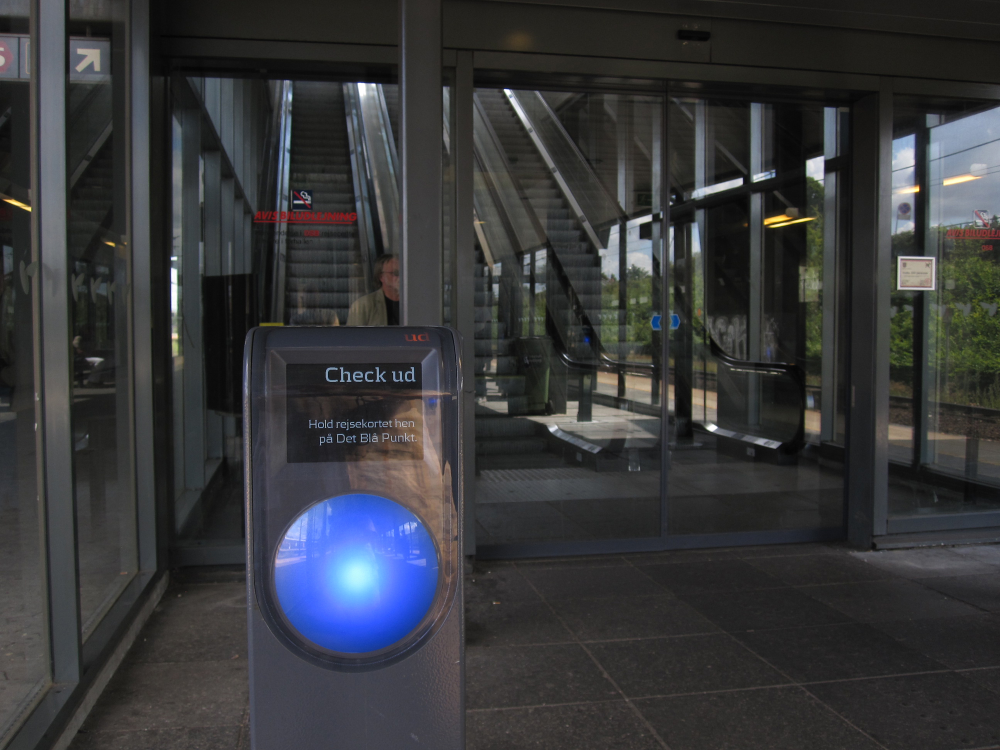
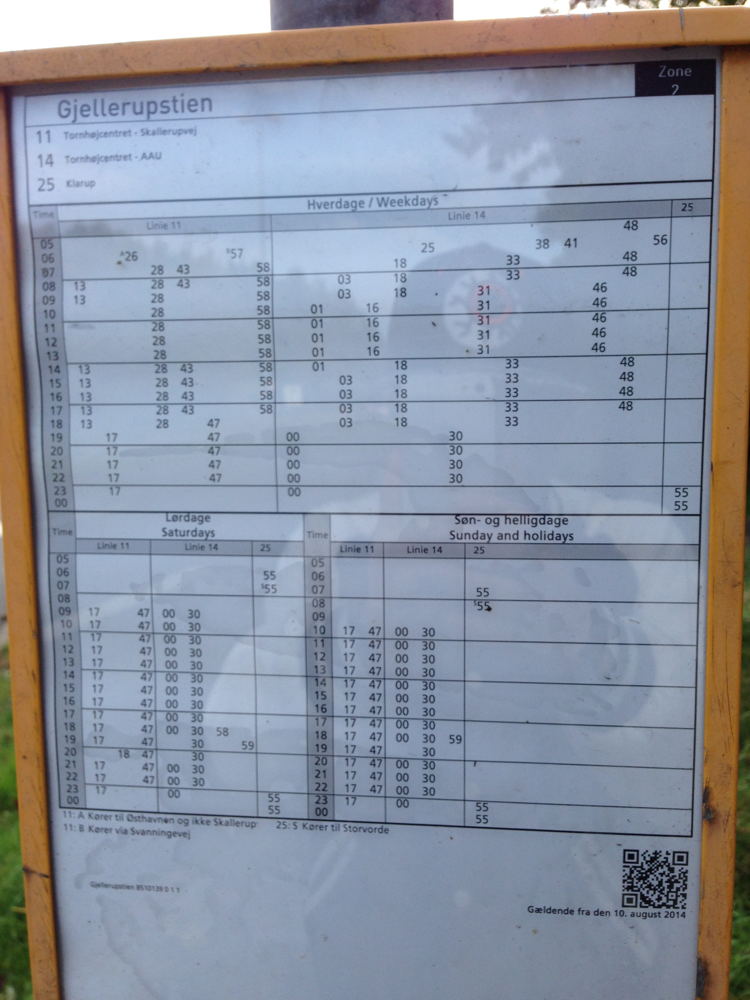
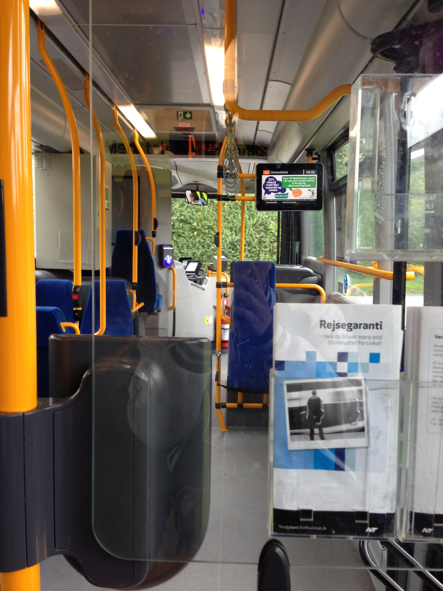
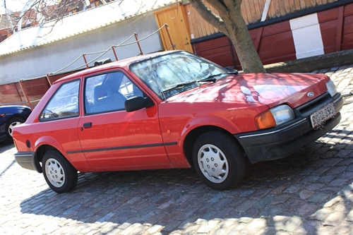
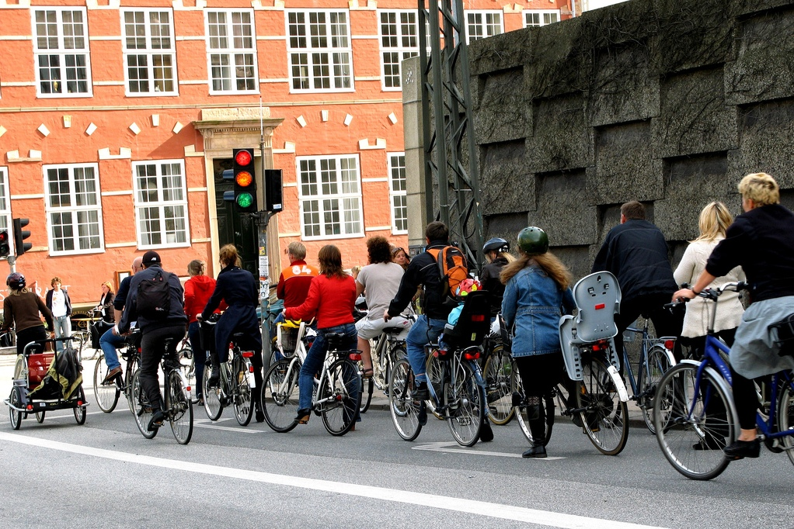

3,648 words in total, 12 minutes required. 两周转眼就过去，当我刚带着手指伤口愈合的喜悦准备嘚瑟之时，鼻子又迅速堵上，令我无法畅快呼吸这美美的空气，我怃然发现原来我在国内时不时头昏就是因为缺氧呀！ 专注投入一件事情会让你抛却这些小痛苦，工作学习的时候可以写写code，下班歇菜的时候那就该码码文字，婶婶在微信里支持我继续更新下去，多亏她给我提醒，现在神清气爽就是要这个feel~ 上一次说过【吃】，今天这一札我们来说说【行】，这儿大有不同的交通体验，令我有强烈的分享欲望，但要是有轮子的物体都要拿出来摆摆龙门阵（作为一个科学严谨的人，我要申明，婴儿车、轮椅等暂不列入考虑 ）。 21. 先说天气 各位看官先别提醒我走题的事情，其实我很有专业素养的，老祖宗讲：“朝霞不出门，暮霞行千里”，足以说明天气对交通出行影响是多大呀！趁着这个机会要来讲讲奥尔堡的天气和气候，权当体育老师给大家补的数学知识吧~ 奥尔堡的秋天温润多雨，而春天据说则干燥有晴，与咱们国家大部分地区是恰恰相反。全年有三分之一的时间在降雨，刚来的时候天天都是蓝天白云，而最近，一大波rainy days将要靠近，已经不能随随便便耍泼了~黑云压境的时候，多半是细雨，但谈不上绵绵，因为风太大了~那种感觉就像是在拍电视剧降下来的假雨，不禁令我脑补了一下赵薇和古巨基：“书桓~”“依萍~”“书桓~”“依萍~”“我真的好想好想好想和你在一起~”。 The Romance In The Rain，可惜我们家的依萍洋圈圈不在身边~ 因为风大，天上的云都是被赶着跑，变天如变脸，这种情况下，一件抗风抗雨的连帽外套是外出溜达必备良品。在路上，戴着帽子不打伞是主流，你要打一伞，就跟国内穿雨衣那种感觉一样一样滴，多半也是由于风大，打伞一则不易，二则有效防御面积太小。 22. 公交票公共交通，对于奥尔堡这么一个小地方来说，那就是公交车走遍天下都不怕呀。先说说买票上车吧，车上只有一位司机，也不像北京有个大妈在后门坐镇（幽幽的想起了从小至今难忘的京片子：八二三东直门嘞！八二三东直门嘞！），司机还要负责卖票，因为人家车上没有投币器，司机师傅只能拉完手刹，再咔咔两下，收钱找钱打票，后头上车的朋友只能跟在屁股后头候着，兴许是人少的缘由，这样低效率的方式依然存在于丹麦公交系统里。友情提示：千万不要带1000kr面值的钞票去买票，我想司机肯定会用安全锤把你打下车。 这样买一张票，跨两区要花20DKK，三区就是30DKK，费用实在是比物价还高出一个档次令人发指，所以要是长期乘坐公交还是买公交卡实在一些，公交卡这方式也提升了卖票的效率，如果每个人都买票上车，公交速度也就堪比拖拉机了。 如果每天都乘坐巴士上下班，买一张月卡（Monthly Card）就是首选，丹麦的公交把城市分成若干区域，跨的区越多，费用就越高，类似于上海广州的地铁，例如对于我而言，学校和住所分属两个相连的区域，那么我就需要买一张跨两区的月票，费用为378kr，这个价格比现金买票当然要划算很多，月卡就是一张类似于学生证的小本，里头除了有有效时间外，还有一张个人玉照，但是没有任何镭射感应的装置，于是就出现了传说中的上车刷脸！（公交师傅容易嘛！咔咔算钱找零卖票也就算了，还要实现人工智能做到人脸识别！）生对双胞胎买一张月票复印一下俩人用想起来好开心好省钱！由于本人年复一年日复一日地做同一班车，那位非裔大叔都不看我卡，直接使眼色让我上车了~长得帅就是辨识度高，我只想安静地做一个美男子，为什么这么难！ 刷脸用的月卡 月卡虽好，可不要贪杯哦~因为每座城市都有自己的月卡，如果你要出外到另一个城市，或者乘坐城际之间的客车，就需要全国通用的旅行卡（Travel Card）了，这张卡就是一张RFID的感应卡，和北京一样，上车刷卡，下车刷卡，按照时间计费。在奥尔堡，跨两区刷一次旅行卡的价格大约为10kr，相比现金买票节省了也不少，并且，随着刷卡次数越大，旅行卡的折扣会增加，类似于会员等级，这个计费系统还是很高级的。旅行卡不仅仅能在公交车使用，如果在哥本哈根，地铁、城际小火车还有轮渡都能刷，十分管用。这两张卡我都常备身边，它们是我出行的基础。随便说一说刷卡的事情，在丹麦的车站月台等处，不会有任何检票口，只有几个光秃秃的刷卡器伫立着，我只想说，在一个以诚信为基础认知的国度，简单的为人造就简单的处事。 无人值守的月台，孤独伫立的刷卡器 23. 公交系统的运维公交系统的费用十分高昂，那么公交系统究竟有怎样的表现呢？我来给大家说说吧。衡量标准为二：一则频，二则准。最近在国内，“车来了”这款软件已经在杭州、武汉等城市兴起，能有这么大的市场在于，国内的公交受到交通路况的影响，有时候扎堆来，有时候等花谢，月台上等公交的人民也是叫苦喋喋。自从到了丹麦坐公交，嘿，腰不酸背不疼了，走路也更有劲了，一口气上八辆公交~因为这方面他们做的太到位了。首先，每个月台上有一张时刻表，它可以清晰告诉你，哪一路车哪一个时刻到达本站，于是你可以发现，他们说23分到，如果是21-25分之外，那么他们就失败了，这大大得益于城市内宽松的交通环境，没有堵车就没有伤害，把时刻表拍张照片下来，算好时间出门，公交车绝对不会令你失望！ 站台上准确的时刻表 对于频度而言，这个高福利的国家的公交我们就要吐吐槽了，每天到了晚上六点之后，本来15分钟一班车就调节到半小时一班，意味着你要是不小心错过了，就要在凛凛寒风中傻站半个小时，这时候我会戴上耳机，在风中哼唱一首王宝强的《有钱没钱回家过年》，打开一下站台上等车人的尴尬气氛，最终刷卡而去深藏功与名。到了周末的时候，公交就更没有节操了，有时候早上10点才开第一班，有时候过分到1小时开一趟，司机朋友们还能不能好好玩耍了？ 司机们都是掐着时间点开车，他说18分开，绝对不会提前也不会延后，有时候提前到了某一站，非要等到时刻表的时间到了，再启动去下一站。虽说遵守时刻是好的，但是公交系统老是动不动改一改时刻表，这就令人苦恼了，好不容易还做了一个应用让大家手机上查看，还经常不准，我已经唱过不少次王宝宝的歌了。 公交车每个位置上都有“STOP”键可以按，如果到站要下车，前往别忘记按，因为如果恰好没人这一站下车，并且月台上没有人在等车，师傅会潇洒地一开而过，留下二愣子的你坐过了站还在位置上傻乐呵，每一次去一个陌生的地方都好痛苦，虽然有电子显示屏会显示下一站，但是因为切换速度着实太快，当二愣子的机会还不少，真是苦不堪言！ 电子牌用来报站 24. 私家车虽然说刚来一个月，但是脸皮死厚的我硬是打入了某大系的华人圈子，还有幸蹭了几回师兄们的私家车。整个城市路上跑的私家车，和国内的车一比，显得朴素和憨气，中国人审美喜欢的汽车流线感这儿很难看到，不禁感慨一家汽车公司在不同地区卖出去的车款式相差的确很大，毕竟众口难调。 整个城市内看到的车有几个特点：一是小，A级车比B级车那可是多多了，国人喜欢大气，买车要上C级车，预算不够也要弄个紧凑型的，在这儿，我看到的“小蛤蟆”到处跑，年轻人有这么一辆车代步不仅轻巧，而且环保，排污小。当然，旅行版的三厢车量和SUV也不少，多半是作为家庭用途出现的，总之利用率也很高；二是旧，几乎看不到什么新车，据说在丹麦购置一辆新车有超过100%的购置税，令许多人望而却步，而开二手车，又有许多的鼓励措施（环保对于他们太过重要，开手动挡比开自动挡要交的税少得多），形成了比较好的生态，使得汽车的使用寿命很长；三是土，请不要跟丹麦人谈加州红、香槟金、月光白，在丹麦车辆几乎只有：土黑、土灰、土蓝、水泥灰、水泥白几个颜色，好可怜的丹麦人民。 小丑土但是环保的丹麦家轿 总之，上一次蹭车，下车才发现是辆奥迪A4，但我真的感觉像A1，师兄请原谅我，我是从土豪遍地的中华人民共和国来的…… 说说家轿的品牌吧，北欧最有名的汽车就是瑞典沃尔沃了，作为一个斯堪的纳维亚国家，丹麦人好像也不是很买瑞典人的帐，不过路上跑的大货车、还有公交车那可都是VOLVO的天下了，这个好消息汇报给我哲哥哦。在这儿，最常见的车就属斯柯达了，斯柯达估计也是丹麦人心中的神车，除此之外，法国的标致、德国的大众也是不少，高尔夫没看到多少，但是普桑还不少（可见车型有多老了）。日韩车也不算少数，看来油耗也牵挂着丹麦人民的心。美国车唱主旋律的就剩下大十字雪佛兰了，别克在这儿没有市场。说起美国通用在欧洲，就要说说欧宝，米兰球迷对欧宝有种特殊的感情，因为它曾经印在马尔蒂尼、舍瓦、因扎吉、卡卡的身上伴随我们成长，国内罕见的欧宝在这儿可是随处可见，勾起我的记忆片段。 最后谈谈驾车的问题，丹麦不是英联邦嘛，自然和中国一样，是靠右行驶。从国内带来驾照，可以置换一个临时驾照（北欧四国通行），用三个月，不过国内的驾照就要拿去交通部门抵押，三个月期限一到，就要参加丹麦的驾驶资格考试，如果通过，就能拥有正式的驾车资格，否则，国内抵押的驾照就再也收不回来了。来之前没有研究过这个，刚好我有两个，抵押一个正好感受下这里的开车出行。 丹麦使用欧盟牌照，不过太过复杂，扩展阅读欧盟牌照。 25. 自行和步行丹麦、荷兰、中国谁才是自行车王国？这个问题不好说，但是丹麦人爱骑自行车那是真的，自行车文化在这儿很热门，如果你跑去哥哈一看，骑车的人就像骑着高头大马一个个穿梭而过。再小巧的姑娘也能骑个老大老高的单车，这儿的城市地处平原，没有丘陵，大家用自行车代步不亦乐乎。 这儿和杭州一样，也有可以免费租用的自行车，杭州是用公交卡，这儿则是投币解锁，但是相比杭州的大数量大规模，在这儿我甚至没有机会去感受一下。 自行车看来对于丹麦人意义非凡，没有人行道的地方却能常常看到自行车道，在每个十字路口甚至都有专门给自行车设立的红绿灯。 丹麦人骑车也疯狂 因为我们这儿城市小，两三公里内步行也是很惬意的，城市里的斑马线不少，车永远让人（讲讲杭州的很多司机着实不易，在日渐拥堵的交通环境下也能做到车让人，值得称赞）。在等待斑马线的人行指示灯时，有一个小插曲，第一天来的时候，我等了五分钟，绿灯也没有亮，后来发现在斑马线两端都有一个触发按钮，当行人想穿过马路时，必须按一下按钮，灯才会在下一个周期变成绿灯，否则一直是红的，究其原因，我想了很久，大概是为了右转弯车辆的便利吧。 【连载继续】 ← Previous Post Next Post→ To show LiveRe comment, please use JavaScript Table of Contents 21. 先说天气22. 公交票23. 公交系统的运维24. 私家车25. 自行和步行